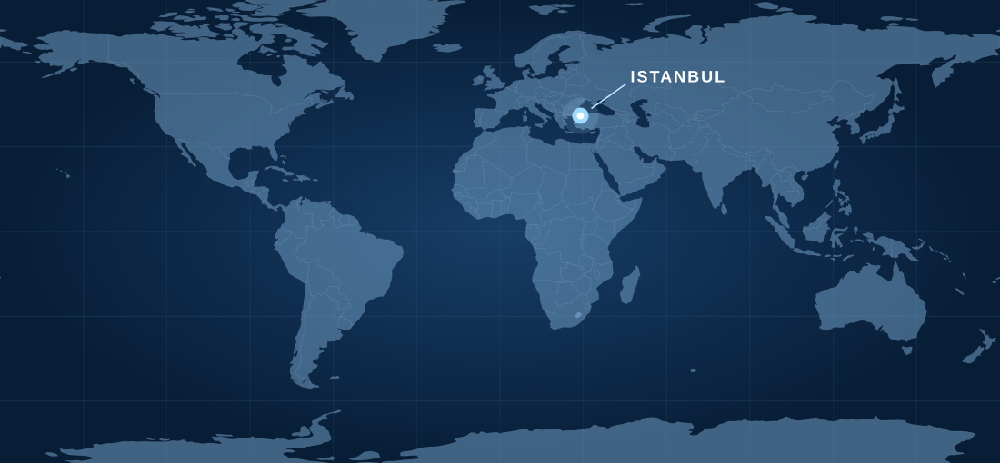

Bridge Watch
Bridge team practices, passage planning, radar and ECDIS use, and the operational decisions that shape safe navigation.
Explore on LinkedInPractical perspectives on bridge operations, environmental responsibility and developments shaping the industry.
We share observations and ideas through four recurring series on our LinkedIn company page.
Bridge team practices, passage planning, radar and ECDIS use, and the operational decisions that shape safe navigation.
Explore on LinkedInEnvironmental compliance, MARPOL topics and practical shipboard measures that help protect the marine environment.
Explore on LinkedInSelected shipping market developments and emerging risks viewed through their relevance to maritime operations.
Explore on LinkedInBroader maritime observations, useful ideas and updates from SafeNauticus beyond our dedicated topic series.
Explore on LinkedInRead our latest posts and follow SafeNauticus for new issues of each series.
We work with shipowners, managers and maritime stakeholders wherever an independent operational perspective is needed.
Connect with our team